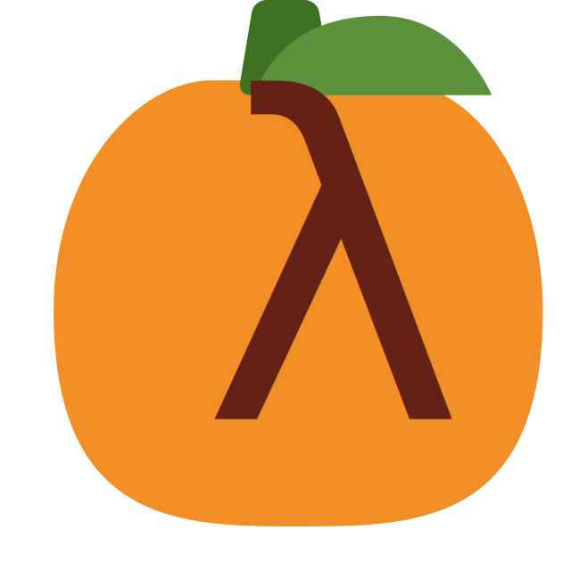

PUMPKIN PATCH
A tool for proof repair

PUMPKIN PATCH ("Proof Updater Mechanically Passing Knowledge Into New Proofs, Assisting The Coq Hacker") is a tool to extend proof automation in Coq with better support for the evolving nature of software development and verification. This tool is the focus of a research project in the PLSE group of UW CSE. We also participate in a cross-institutional research program on proof engineering, an area of research at the intersection of software engineering and formal methods.
To learn more about the current prototype, check out our recent paper in CPP 2018.
Source code
Available on GitHub.
Publications
Contact
Talia Ringer is the point of contact: tringer@cs.washington.edu.